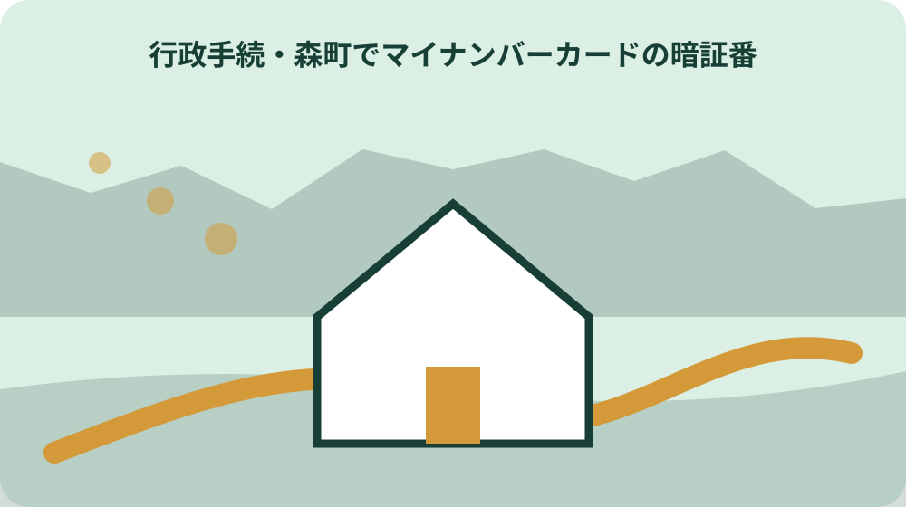

先に結論を確認する
この記事の答え：使えないサービス名を最初に書くため、対象者、基準日、公式資料、未確認事項を最初の一行へ置きます。
森町で最初に照合する条件：森町公式の内容が異なる二つの案内を2026-08-13に確認する
使えないサービス名を最初に書く
マイナンバーカードには用途の異なる複数の暗証番号があります。使えないサービス名を最初に書く際、最初にこの点を確かめると、似た名称の届出や証明書を取り違えにくくなります。使えないサービス名を最初に書くときは、手元の書類は記載どおりに読み、分からない部分だけを印で示します。
一定回数の誤入力で暗証番号がロックされます。使えないサービス名を最初に書くためには、この点に必要な原本と写しを分け、確認日を余白へ書いておけば、古い案内と新しい案内が混ざりません。
使えないサービス名を最初に書く前に、森町へ相談するときは、この点で迷っている一点を先に伝えます。「マイナンバーカードには用途の異なる複数の暗証番号があります」という案内を見た日と、実際の書類のどこが判断できないかを添えると話が具体的になります。
使えないサービス名を最初に書く際、確認後はこの点の回答、担当窓口、残った作業を一行にまとめます。使えないサービス名を最初に書くときは、次の作業を考える家族も、それまでの判断を同じ順序でたどれます。
使えないサービス名を最初に書くためには、この点で使った公的案内は、ページ名と確認日も控えます。マイナンバーカードには用途の異なる複数の暗証番号がありますという記述が後で更新されても、今回どの情報を根拠にしたか分かります。
署名用暗証番号を区別する
署名用暗証番号を区別する際、この点では、まず人と書類の組合せを確かめます。署名用電子証明書の暗証番号は英数字を組み合わせたものですという案内があるため、家族の呼び方や通称ではなく、公的書類に記された表記を基準にします。
署名用暗証番号を区別するときは、日付の前後が重要になるこの点は、予定日だけでなく実際に受け付けられた日も残します。失念した場合とロックした場合は再設定方法を確認しますという条件がある場合、二つの日付を同じものとして扱いません。
署名用暗証番号を区別するためには、手元の資料だけでこの点を決められなければ、分からない欄をそのまま窓口へ示せます。署名用暗証番号を区別する前に、質問を一つに絞ることで、一般案内ではなく今回の事情に沿った回答を受けやすくなります。
署名用暗証番号を区別する際、この点の記録には、確認に使った資料名も添えます。署名用暗証番号を区別するときは、後で次の作業へ進む際、どの情報が本人確認済みで、どこからが家族の予定かを見分けられます。
署名用暗証番号を区別するためには、家族にはこの点の結論だけでなく、確認できなかった点も伝えます。失念した場合とロックした場合は再設定方法を確認しますを手がかりに再確認する場合も、前回の続きから始められます。
利用者証明用暗証番号を区別する
利用者証明用暗証番号を区別する際、窓口名を調べるだけではこの点の準備は終わりません。利用者証明用電子証明書は数字四桁の暗証番号を使いますを出発点に、本人が行う部分、家族が補助できる部分、窓口でなければ判断できない部分を分けます。
森町のカード交付案内で窓口手続と持参物を確認できますという公式案内は、この点の確認範囲を定める手がかりです。利用者証明用暗証番号を区別するときは、案内にない事情は推測せず、氏名や日付を伏せない形で質問メモへ移します。
利用者証明用暗証番号を区別するためには、電話でこの点を確認した場合は、回答の要点だけでなく、問い合わせた日と担当部署も記録します。利用者証明用暗証番号を区別する前に、再確認が必要になっても、最初から説明し直さずに済みます。
利用者証明用暗証番号を区別する際、次の作業に必要なものが判明したら、この点の資料と混ぜず別の封筒やフォルダーへ移します。利用者証明用暗証番号を区別するときは、未提出、提出済み、返却待ちの区別も保てます。
利用者証明用暗証番号を区別するためには、この点の問い合わせ控えは、回答を受けた人の手元だけに置きません。利用者証明用電子証明書は数字四桁の暗証番号を使いますと合わせて共有場所を決め、個人情報を含む原本とは分けて保管します。

券面事項入力補助用を分ける
券面事項入力補助用と住民基本台帳用にも数字四桁の暗証番号があります。券面事項入力補助用を分ける際、この案内を実際のこの点へ当てはめるには、手元の表示を一文字ずつ比べることが大切です。券面事項入力補助用を分けるときは、似た住所や旧表記は、同じだと決めず候補として扱います。
券面事項入力補助用を分けるためには、この点の比較表には、資料の名称と発行日を一緒に書きます。森町のコンビニ交付案内は利用者証明用電子証明書を使う場面を示していますという情報があっても、いつの資料を見たかが不明だと後日の照合が難しくなります。
券面事項入力補助用を分ける前に、一致しない箇所が見つかったときは、正しいと思う内容へ書き換えず、双方の表記を残します。券面事項入力補助用を分ける際、森町へこの点を尋ねる際、その差そのものが確認材料になります。
券面事項入力補助用を分けるときは、回答を得たら、この点で採用した表記と採用しなかった表記を分けます。券面事項入力補助用を分けるためには、次の作業を担当する人にも判断理由が伝わります。
券面事項入力補助用を分ける前に、地名や氏名が関わるこの点では、読みが同じでも文字が違えば別の候補として残します。森町のコンビニ交付案内は利用者証明用電子証明書を使う場面を示していますの確認にも、原文のままの表記が役立ちます。
住民基本台帳用を分ける
住民基本台帳用を分ける際、この点は本人だけでなく、同じ手続に関係する家族にも影響します。一定回数の誤入力で暗証番号がロックされますという公式情報を共有し、誰の書類が動くのかを氏名ごとに確かめます。
住民基本台帳用を分けるときは、家族表にはこの点の対象者、連絡先、確認の要否を別々に置きます。スマートフォンとコンビニを使う再設定は対象暗証番号や条件が限られますという案内がある場合も、全員へ同じ条件が当てはまるとは決めません。
住民基本台帳用を分けるためには、森町へ聞く内容は、家族全体の事情と個人ごとの疑問を分けます。住民基本台帳用を分ける前に、この点について誰の何を確認したいのかが明確なら、回答を別人の記録へ写す事故を防げます。
住民基本台帳用を分ける際、家族への共有では、この点の結論だけでなく確認日も伝えます。住民基本台帳用を分けるときは、次の作業の準備を始める時期を、古い記憶ではなく同じ記録から判断できます。
住民基本台帳用を分けるためには、この点の対象者が複数いる場合、確認済みの人だけに日付を付けます。一定回数の誤入力で暗証番号がロックされますという共通案内があっても、個別確認の結果まで一括にはしません。
失念とロックを同じ欄にしない
失念とロックを同じ欄にしない際、この点には、先に取っておく方がよい資料と、手続後でなければ取れない資料があります。失念した場合とロックした場合は再設定方法を確認しますを確認し、必要日から逆算して取得順を決めます。
代理人による再設定は本人手続と同じ日に完了しない場合があります。失念とロックを同じ欄にしないときは、そのためこの点の一覧では、用途、提出先、必要な時期を一枚ごとに付けます。失念とロックを同じ欄にしないためには、枚数だけをそろえても目的は分かりません。
失念とロックを同じ欄にしない前に、発行までの日数が不明な資料は、この点の予定表へ確定日として書きません。失念とロックを同じ欄にしない際、森町の窓口へ、受付日と受取可能日の両方を確認します。
失念とロックを同じ欄にしないときは、取得済み資料には用途を付け、次の作業で使う分と保管する分を分けます。失念とロックを同じ欄にしないためには、この点のために集めた原本を別の提出先へ誤って渡すことも避けられます。
失念とロックを同じ欄にしない前に、取得費用や枚数が関わるこの点は、必要性を確かめてから申請します。代理人による再設定は本人手続と同じ日に完了しない場合がありますを確認した記録があれば、同じ資料を重ねて取ることを避けられます。
コンビニで可能な再設定を確認する
森町のカード交付案内で窓口手続と持参物を確認できます。コンビニで可能な再設定を確認する際、この点では、受付が済んだ時点と内容が反映された時点を分けて考えます。コンビニで可能な再設定を確認するときは、同じ日に完了すると決めず、受取可能日の案内を待ちます。
暗証番号そのものを家族共有表や端末メモへ記載しませんという事情があるため、この点の確認票には申請日、受理日、証明取得日を別欄で置きます。コンビニで可能な再設定を確認するためには、空欄は遅れではなく、まだ確認していない印です。
コンビニで可能な再設定を確認する前に、急ぎの提出先がある場合は、この点の証明がいつ必要かを森町へ具体的に伝えます。コンビニで可能な再設定を確認する際、代わりの資料が使えるかどうかも、提出先ごとに確認します。
コンビニで可能な再設定を確認するときは、次の作業へ進めるのは、この点の反映を確認してからです。コンビニで可能な再設定を確認するためには、受付控えと取得した証明を並べれば、どの時点の情報かが分かります。
コンビニで可能な再設定を確認する前に、この点の待ち時間には、受付控えをなくさない保管場所を決めます。森町のカード交付案内で窓口手続と持参物を確認できますに関する証明が届いたら、申請時の記載と照らしてから使用します。
窓口再設定の持ち物を用意する
窓口再設定の持ち物を用意する際、別の手続が同時に進んでいると、この点の順番は変わります。森町のコンビニ交付案内は利用者証明用電子証明書を使う場面を示していますを踏まえ、先に提出すると影響する書類がないかを確認します。
窓口再設定の持ち物を用意するときは、この点と並行する用事は、提出先と期限を横に並べます。デジタル庁はカードの電子証明書と安全管理を案内していますという案内も、他の制度で同じ扱いになるとは限らないためです。
窓口再設定の持ち物を用意するためには、相続、契約、学校、勤務先などが関わる場合、この点の情報をどの時点で求められるかを相手先へ尋ねます。窓口再設定の持ち物を用意する前に、森町への届出日だけで全体の日程を決めません。
窓口再設定の持ち物を用意する際、順番を決めた理由をこの点の欄へ短く残すと、次の作業の担当者が予定変更の影響を判断できます。窓口再設定の持ち物を用意するときは、家族間の口頭連絡だけに頼らずに済みます。
窓口再設定の持ち物を用意するためには、並行する手続が増えたら、この点を終えた日ではなく、次に影響する日を予定表へ移します。デジタル庁はカードの電子証明書と安全管理を案内していますの条件も再確認し、順番だけで判断しません。
代理人手続の所要日を見込む
代理人手続の所要日を見込む際、この点の持ち物は、名称が似ていても代用できるとは限りません。スマートフォンとコンビニを使う再設定は対象暗証番号や条件が限られますという案内をもとに、本人確認用、提出用、照合用を分けます。
代理人手続の所要日を見込むときは、原本を持ち出すこの点では、返却の有無も確認します。マイナンバーカードには用途の異なる複数の暗証番号がありますという情報と合わせ、コピーで足りる資料には用途を書いて原本と区別します。
代理人手続の所要日を見込むためには、署名や暗証番号を伴うこの点は、家族が本人に代わって判断しません。代理人手続の所要日を見込む前に、本人が行う欄と窓口で確認する欄を事前に色分けすると安心です。
代理人手続の所要日を見込む際、窓口から戻ったら、この点で返却された原本を確認します。代理人手続の所要日を見込むときは、次の作業へ使う資料だけを残し、不要な個人情報の写しを増やしません。
代理人手続の所要日を見込むためには、この点の持ち物は出発前に写真へ残す方法もありますが、暗証番号や本人確認書類の全面を共有しません。スマートフォンとコンビニを使う再設定は対象暗証番号や条件が限られますの確認に必要な範囲だけを扱います。
再設定後に一サービスずつ試す
代理人による再設定は本人手続と同じ日に完了しない場合があります。再設定後に一サービスずつ試す際、この点では、手続きをした日と証明できるようになった日を同じ欄へ書かないことが重要です。
署名用電子証明書の暗証番号は英数字を組み合わせたものですという案内を確認したうえで、この点の日付欄には予定、実績、再確認の三つを置きます。再設定後に一サービスずつ試すときは、変更があっても元の予定を消さず、経過を残します。
再設定後に一サービスずつ試すためには、期限が近いこの点は、森町の受付日だけでなく提出先が必要とする日も確認します。再設定後に一サービスずつ試す前に、郵送や受取待ちの時間を含めて余裕を見ます。
再設定後に一サービスずつ試す際、この点の日程が確定したら、次の作業の開始日を見直します。再設定後に一サービスずつ試すときは、別の家族が見ても、どの日付を基準にしたか分かる状態になります。
再設定後に一サービスずつ試すためには、この点で期限を聞いたときは、起算日も一緒に確認します。署名用電子証明書の暗証番号は英数字を組み合わせたものですという案内だけから最終日を自己計算せず、休日や受付方法の扱いを窓口へ尋ねます。
大石の視点：暗証番号そのものは記録しない
暗証番号そのものを家族共有表や端末メモへ記載しません。暗証番号の再設定の実務提案を考える際、ここまでは公的資料から確認できる内容です。暗証番号の再設定の実務提案では、この点で扱うのは、その事実を家族の記録へどう落とし込むかという実務上の工夫です。
私、大石浩之は、森町でマイナンバーカード暗証番号の種類・ロック・再設定を分けるを一度で終わるものとして扱わず、確認日、相手、手元に残った書類を一組にする方法が分かりやすいと考えます。暗証番号の再設定の実務提案を記録するときは、これは森町や国の公式見解ではなく、取り違えを減らすための提案です。
利用者証明用電子証明書は数字四桁の暗証番号を使います。暗証番号の再設定の実務提案を家族へ伝える前に、この事実と家族の希望を同じ欄へ書くと、どこまでが公式情報か見分けにくくなります。暗証番号の再設定の実務提案を考える際、この点では、公的に確認した内容、本人の意思、家族の予定を三つに分けて残します。
暗証番号の再設定の実務提案では、次の作業へ移る時点では、未確認事項を推測で埋めません。暗証番号の再設定の実務提案を記録するときは、この手続の回答日と確認先が分かれば、後日条件が変わった場合も、どの記録から見直すべきか判断できます。
暗証番号の再設定の実務提案を家族へ伝える前に、この点で採用した整理方法は、私、大石浩之の実務上の提案です。暗証番号そのものを家族共有表や端末メモへ記載しませんという公的事実と同じものではないため、記録上も欄を分けます。
種類と再設定日だけを安全に残す
種類と再設定日だけを安全に残す際、最後にこの点を見直すと、途中で増えた書類や回答の抜けを拾えます。デジタル庁はカードの電子証明書と安全管理を案内していますを基準に、最初の予定と実際の結果を比べます。
券面事項入力補助用と住民基本台帳用にも数字四桁の暗証番号があります。種類と再設定日だけを安全に残すときは、この点の保管欄には、原本の場所、写しの提出先、画面保存の確認日を記します。種類と再設定日だけを安全に残すためには、どれか一つだけを残す方法ではありません。
種類と再設定日だけを安全に残す前に、回答が変わった場合は、古い記録を消さずこの点の下へ新しい日付で追記します。種類と再設定日だけを安全に残す際、制度改正なのか個別回答の違いなのかも確認しやすくなります。
種類と再設定日だけを安全に残すときは、この点を家族へ渡すときは、未確認事項と次に連絡する窓口を明示します。種類と再設定日だけを安全に残すためには、次の作業を別の人が担当しても、同じ質問を繰り返さずに済みます。
種類と再設定日だけを安全に残す前に、引継ぎ後にこの点の条件が変わった場合は、新しい回答を追記します。券面事項入力補助用と住民基本台帳用にも数字四桁の暗証番号がありますを確認した古い記録も残すことで、変更前後の違いを説明できます。